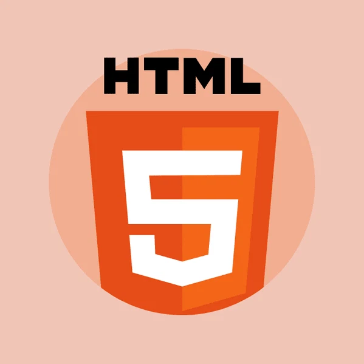

Sobre mim
Meu nome é João Lucas Castro e sou um estudante dedicado do IFMS Nova Andradina. Tenho paixão por arte, escrita e tecnologia, e busco sempre aprender novas formas de expressar minhas ideias e hitórias que desenvolvo ao longo da vida. Gosto de socializar e fazer amizades em meu meio.
Minhas habilidades
-
Criação artística e desenho tradicionais

-
Escrita criativa e narrativa para projetos ou histórias

-
O básico de programação (HTML, JS, CSS)

Formação e experiências
Atualmente curso o ensino técnico integrado em informática no IFMS Nova Andradina. Durante meu tempo na instituição, participei de projetos e eventos, auxiliando na parte artística, visual e na escrita de apresentações.
- Curso Técnico Integrado em Informática IFMS (em andamento)
- Participação em eventos como: Nerdif ou Festac
- Participação em projeto de jogo com a professora Silvana
Projetos
Projeto 1 – The Ligth of me
historia criada por mim em 3 anos, apresentei na "FESTAC - Festival de Arte e Cultura" vendendo cada edição por 5 reais cada, cada uma delas possui 24 paginas feitas a mão por mim
Projeto 2 – ajuda em eventos
costumo ajudar na montagem dos eventos da nossa sala, junto de algumas ideas para jogos e outras atividades que nos ajudam a arrecadar dinheiro
Contato
Entre em contato comigo:
- E-mail: jlcastrorodrigues@gmail.com
- GitHub: github.com/JLCASTRO1234567